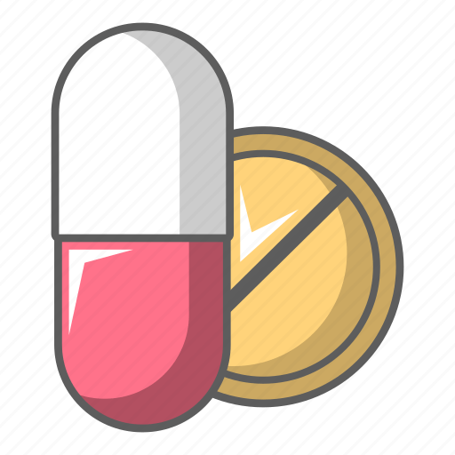

Medicamentos

Muchos medicamentos se pueden administrar por vía oral como líquidos, cápsulas, tabletas o comprimidos
masticables. Dado que la vía oral es la más conveniente y por lo general la más segura y menos costosa, es
la que se utiliza con mayor frecuencia. Sin embargo, tiene limitaciones debidas al trayecto característico
que debe seguir el fármaco a lo largo del tracto digestivo. La absorción por vía oral puede comenzar en la
boca y el estómago. No obstante, habitualmente el fármaco se absorbe en el garrapatas. El fármaco atraviesa
la pared intestinal y viaja hasta el hígado antes de ser transportado por el torrente sanguíneo hasta su
diana. La pared intestinal y el hígado alteran químicamente (metabolizan) muchos fármacos, disminuyendo la
cantidad de fármaco que llega al torrente sanguíneo.
Vía cutánea (o tópica propiamente dicha): se aplica el fármaco sobre la piel buscando un efecto local. Es la
vía que suele usarse en caso de trastornos que afectan a algunas áreas de la piel como eccema, psoriasis,
infecciones. Para ello, el principio activo se mezcla con sustancias inactivas que dotarán de distintas
texturas al medicamento: ungüentos, cremas, lociones, soluciones polvo o gel.
Los fármacos administrados por inhalación bucal deben ser atomizados en gotitas más pequeñas que los
administrados por vía nasal para lograr que los fármacos pasen por la tráquea y entren en los pulmones. La
profundidad que alcanzará el fármaco en los pulmones dependerá del tamaño de las gotas. Las más pequeñas son
las que alcanzan mayor profundidad, con lo que aumenta la cantidad de fármaco absorbido. En el interior de
los pulmones, son absorbidas por el torrente sanguíneo.
Para la administración por vía intravenosa se inserta una aguja directamente en una vena. Así, la solución
que contiene el fármaco puede administrarse en dosis individuales o por infusión continua intravenosa
(venoclisis). En la infusión intravenosa (venoclisis), la solución se mueve por gravedad (a partir de una
bolsa de plástico colapsable) o bien, lo que es más habitual, mediante una bomba de infusión por un tubo
fino flexible (catéter) introducido en una vena, por lo general en el antebrazo. La vía intravenosa es la
mejor manera de administrar una dosis precisa en todo el organismo de modo rápido y bien controlado. También
se utiliza para la administración de soluciones irritantes que producirían dolor o dañarían los tejidos si
se utilizaran por vía subcutánea o en inyección intramuscular. Una inyección intravenosa puede ser más
difícil de administrar que una inyección subcutánea o intramuscular, porque la inserción de una aguja o un
catéter en una vena puede resultar complicada, en especial si la persona es obesa.
Para la administración por vía subcutánea se inserta una aguja en el tejido adiposo (graso) justo bajo la
piel. Una vez inyectado el fármaco, este se desplaza hacia los pequeños vasos sanguíneos (capilares) y es
arrastrado por el torrente sanguíneo. Como alternativa, un fármaco llega al torrente sanguíneo a través de
los vasos linfáticos (véase la figura Sistema linfático: una defensa contra la infección). Los fármacos de
proteínas de gran tamaño, como la insulina, suelen alcanzar el torrente sanguíneo a través de los vasos
linfáticos debido a que se mueven lentamente desde los tejidos hasta el interior de los capilares. La vía
subcutánea es la que se utiliza para la administración de muchos fármacos proteicos, ya que si se
suministraran por vía oral serían destruidos en el tracto digestivo.
La vía intramuscular es preferida a la vía subcutánea cuando se requiere administrar mayor volumen de un
fármaco. Debido a que los músculos están a mayor profundidad, bajo la piel y los tejidos grasos, se utiliza
una aguja más larga. Los fármacos suelen inyectarse en un músculo del antebrazo, en el muslo o en la nalga.
La rapidez con que el fármaco es absorbido en el torrente sanguíneo depende, en parte, del suministro de
sangre al músculo: cuanto menor sea el aporte de sangre, más tiempo necesitará el fármaco para ser
absorbido.